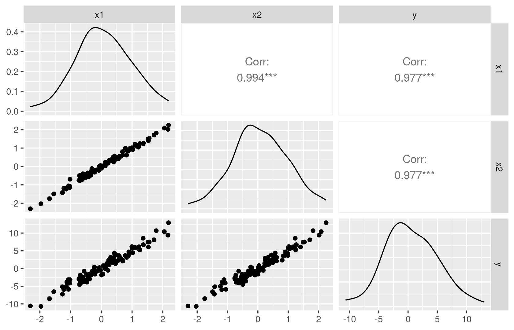
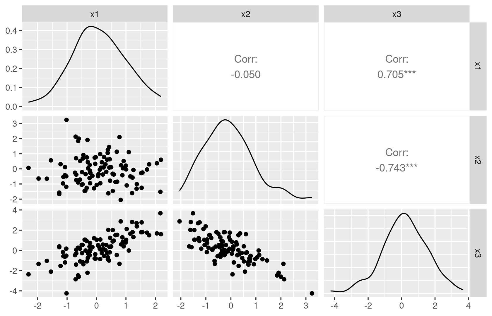
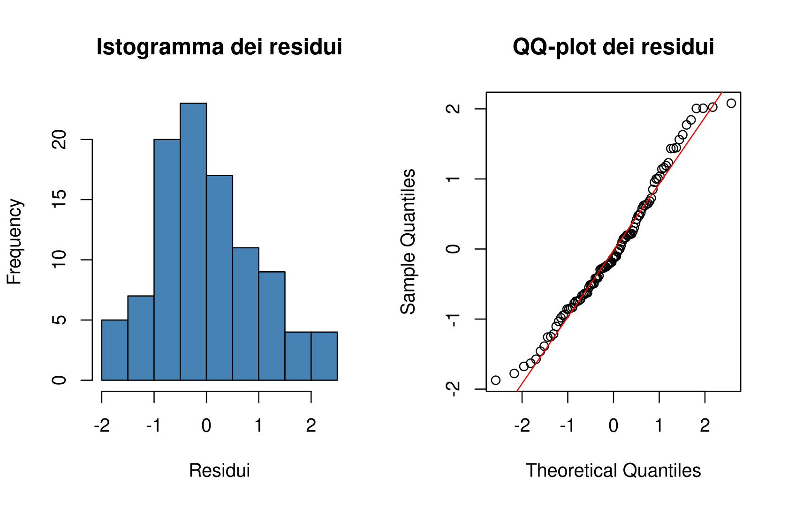
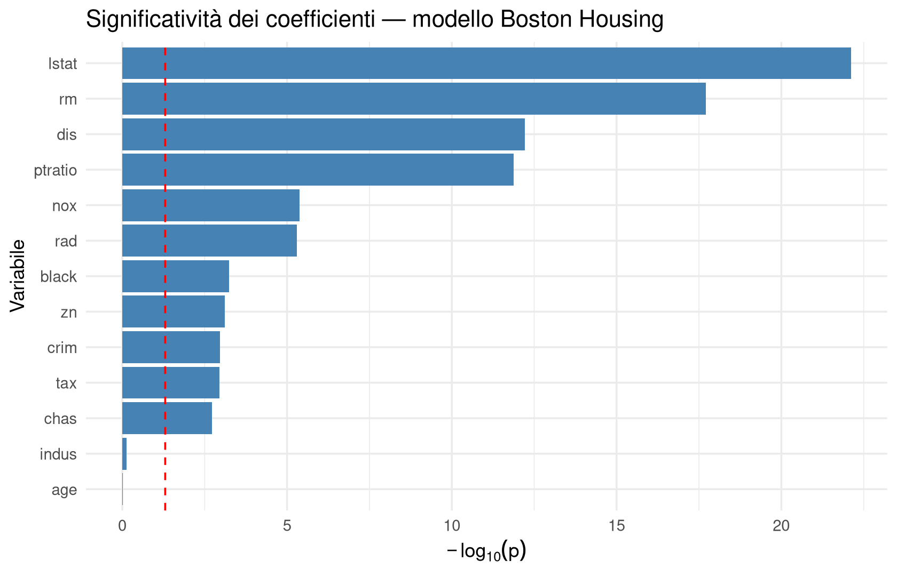
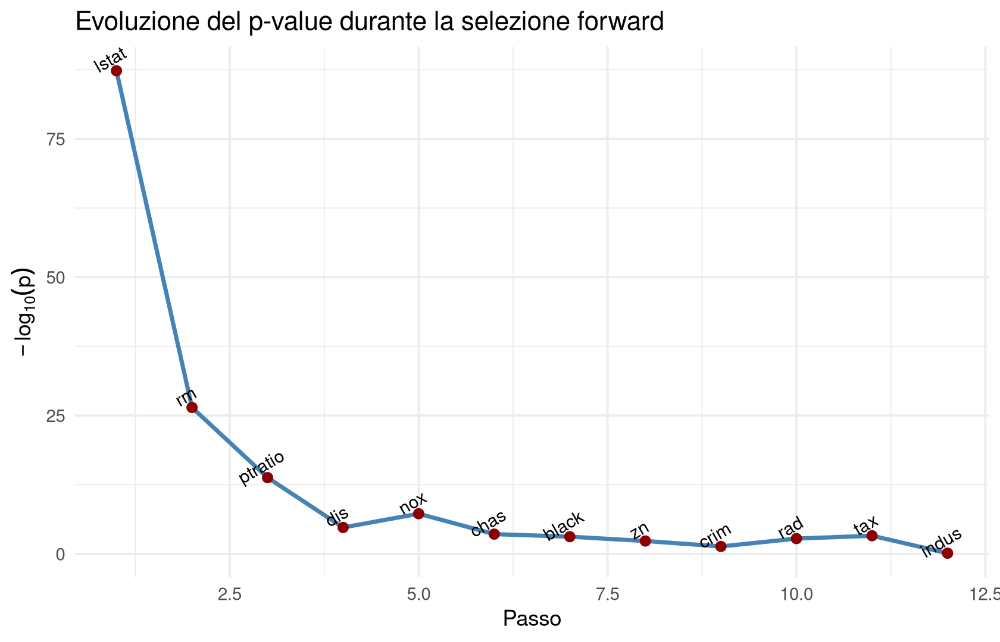

8Riduzione dei modelli di regressione: collinearità e regolarizzazione
8.1 Obiettivi del capitolo
Al termine del capitolo dovresti essere in grado di:
richiamare il modello di regressione lineare multipla e le sue ipotesi principali, spiegando in particolare perché l’invertibilità della matrice di Gram \(G\) non è un dettaglio tecnico ma una condizione statistica sostanziale;
distinguere collinearità e multicollinearità, e spiegare perché il correlogramma individua bene la prima ma può non accorgersi affatto della seconda;
calcolare e interpretare due diagnostici di (multi)collinearità — il condizionamento \(\kappa(G)\) e il VIF — riconoscendo che possono essere in disaccordo tra loro;
discutere criticamente le tre grandi famiglie di rimedi (selezione di variabili, PCA/PCR, regolarizzazione), inclusi i rispettivi punti deboli;
applicare correttamente il monito “non eliminare più variabili collineari insieme”: spiegare perché test di significatività, AIC/BIC e stepwise vanno usati con questa cautela;
interpretare Ridge e LASSO sia dal punto di vista variazionale (bias-varianza) sia da quello bayesiano (prior su \(\beta\)), e spiegare geometricamente perché LASSO produce coefficienti esattamente nulli mentre Ridge no;
orientarsi in un workflow pratico decisionale che parte da OLS e sceglie via via stepwise, PCR o regolarizzazione a seconda dell’obiettivo.
8.2 Ripasso: il modello di regressione multipla e le sue ipotesi
8.2.1 Motivazione
Nel capitolo precedente abbiamo costruito la macchina della regressione lineare multipla: la stima OLS, la sua forma chiusa tramite la matrice di Gram, i test e gli intervalli di confidenza che ne quantificano l’incertezza. Tutto quell’apparato, però, poggia silenziosamente su un’assunzione che raramente viene messa in discussione finché non smette di valere: che la matrice di Gram sia effettivamente invertibile, e non solo “sulla carta” ma anche numericamente. Questo capitolo parte proprio da qui: cosa succede quando questa assunzione è violata, o quasi violata, e cosa possiamo fare al riguardo.
8.2.2 Concetto e notazione
Fissiamo la notazione già introdotta nel capitolo precedente, che riutilizzeremo per tutto il capitolo. I dati sono organizzati in una matrice di design\(\Phi(\bm x)\), con \(n\) righe (una per osservazione) e \(p\) colonne (una per ciascuna caratteristica trasformata, inclusa eventualmente l’intercetta). Il modello di regressione lineare multipla è
e lo stimatore dei minimi quadrati ha la forma chiusa
\[
\beta_{OLS} = G^{-1}\Phi(\bm x)^T \bm y, \qquad G := \Phi(\bm x)^T \Phi(\bm x) \in \mathbb{R}^{p\times p}
\]
dove \(G\) è la matrice di Gram. Le ipotesi principali del modello, viste nel capitolo precedente, sono essenzialmente due:
nessuna collinearità, cioè \(G\) invertibile;
indipendenza e omoschedasticità dei residui, cioè \(\varepsilon_1,\ldots,\varepsilon_n\) indipendenti con la stessa varianza \(\sigma^2\), costante e non dipendente da \(x\).
NoteCome leggere il risultato
La seconda ipotesi ha un nome per il caso in cui viene violata: si parla di eteroschedasticità quando la varianza del rumore dipende sistematicamente da \(x\) (ad esempio, un modello che prevede i prezzi delle case potrebbe avere residui più dispersi per le case più costose). L’omoschedasticità è, in questo senso, un’ipotesi “di comodo”: semplifica enormemente la teoria (un unico parametro \(\sigma^2\) invece di una funzione \(\sigma^2(x)\)), ma va sempre trattata come un’assunzione da verificare, non come un fatto garantito dai dati. In questo corso non approfondiamo la diagnosi dell’eteroschedasticità, ma è bene sapere che il nome esiste ed è il termine tecnico opposto a “omoschedasticità”.
Questo capitolo si concentra sulla prima ipotesi, quella di non collinearità, e su cosa fare quando è (quasi) violata. Rimandiamo invece un’analisi più sistematica della gaussianità dei residui — la terza assunzione implicita, quella su \(\varepsilon\) — al capitolo successivo, dove introdurremo un vero test statistico formale.
8.2.3 Intuizione: perché l’invertibilità di \(G\) non è un dettaglio tecnico
Vale la pena soffermarsi su perché, esattamente, la non invertibilità di \(G\) è un problema pratico e non solo un ostacolo algebrico. La formula \(\beta_{OLS}=G^{-1}\Phi(\bm x)^T\bm y\) richiede di calcolare \(G^{-1}\), e il calcolo esplicito dell’inversa di una matrice passa (concettualmente, se non sempre algoritmicamente) attraverso il suo determinante, che compare al denominatore delle formule di inversione. Se \(\det(G)\) è vicino a zero — non necessariamente uguale a zero, ma piccolo — allora \(G^{-1}\) contiene numeri enormi, e con essi anche \(\beta_{OLS}\): piccolissime variazioni nei dati osservati vengono amplificate a dismisura nelle stime dei coefficienti.
Questo suggerisce una distinzione importante, spesso trascurata: che \(G\) sia esattamente singolare (determinante nullo, inversa non definita) è un evento raro, quasi patologico, che richiederebbe una dipendenza lineare esatta tra le colonne di \(\Phi(\bm x)\). Il problema pratico che incontriamo quasi sempre nei dati reali non è questo, ma il caso in cui \(G\) è quasi singolare: invertibile in senso stretto, ma con un determinante molto piccolo rispetto alla scala dei dati. In questa situazione \(\beta_{OLS}\) esiste ancora formalmente, ma è numericamente instabile: due campioni generati dallo stesso identico modello possono produrre stime dei coefficienti radicalmente diverse. Vedremo un esempio concreto di questo fenomeno tra poco.
WarningAttenzione
Non aspettarti di vedere quasi mai, nei dati reali, una matrice \(G\) esattamente non invertibile (a meno di errori grossolani, come includere due volte la stessa variabile o violare un vincolo esatto, ad esempio inserire sia una variabile categoriale con tutte le sue categorie sia l’intercetta). Il problema tipico è la quasi-singolarità, molto più insidiosa perché non genera un errore evidente in R: il modello si stima “senza lamentarsi”, ma produce risultati inaffidabili.
8.2.4 Domande di comprensione
Perché una \(G\) quasi singolare, e non solo esattamente singolare, è già un problema pratico serio?
In che modo il determinante di \(G\) entra nel meccanismo che spiega l’instabilità dei coefficienti stimati?
Perché l’omoschedasticità è descritta come un’ipotesi “di comodo”? Che cosa cambierebbe, concettualmente, se la varianza del rumore dipendesse da \(x\)?
8.3 Collinearità e multicollinearità
8.3.1 Motivazione
Il termine “collinearità” viene spesso usato in modo generico per indicare “problemi con le variabili di ingresso correlate tra loro”. È utile invece distinguere fin da subito due situazioni concettualmente diverse: una relazione (quasi) lineare tra due predittori, e una relazione (quasi) lineare che coinvolge tre o più predittori contemporaneamente, senza che nessuna coppia presa isolatamente mostri nulla di sospetto. Questa distinzione non è pedanteria terminologica: guida direttamente la scelta degli strumenti diagnostici da usare.
8.3.2 Concetto / definizione
ImportantDefinizione
Si parla di collinearità quando esiste una relazione (quasi) lineare tra due predittori (caratteristiche) del modello. Si parla di multicollinearità quando una relazione (quasi) lineare coinvolge tre o più predittori simultaneamente. In entrambi i casi, l’effetto è che la matrice di Gram \(G=\Phi(\bm x)^T\Phi(\bm x)\) diventa difficile da invertire numericamente, con le conseguenze descritte sopra: stime numericamente imprecise, varianze dei coefficienti gonfiate, interpretazione dei coefficienti compromessa.
8.3.3 Esempio: collinearità semplice
Costruiamo un piccolo esperimento controllato: due predittori quasi identici, \(X_2\) ottenuto da \(X_1\) aggiungendo una piccola perturbazione gaussiana, e una risposta \(Y\) che dipende da entrambi.
Prima di calcolare. I coefficienti veri con cui abbiamo generato \(Y\) sono \(3\) per \(X_1\) e \(2\) per \(X_2\). Ti aspetti che il modello stimato riesca a recuperare separatamente questi due valori, oppure no? Perché?
Ripetiamo esattamente lo stesso esperimento — stesso modello generatore, stessa numerosità — cambiando solo il seed casuale:
Dopo il calcolo. I due summary raccontano storie all’apparenza diverse. Nel primo run, sia \(X_1\) sia \(X_2\) (e talvolta l’intercetta) risultano poco significativi, con p-value nell’ordine di qualche punto percentuale — un test-\(t\) un po’ “tiepido” su entrambe le variabili. Rieseguendo con un altro seed, la situazione può capovolgersi: \(X_1\) diventa fortemente significativo mentre \(X_2\) (e l’intercetta) perdono di significatività, pur avendo generato i dati con esattamente lo stesso modello.
Questo comportamento non è un errore di implementazione né una stranezza del dataset: è la firma tipica della collinearità. Poiché \(X_1\) e \(X_2\) sono quasi indistinguibili nei dati osservati, il modello non ha modo di “sapere” quanto della relazione con \(Y\) vada attribuito all’uno e quanto all’altro; il risultato può essere assorbito arbitrariamente da uno dei due coefficienti a seconda delle minuscole differenze campionarie, mentre la somma dei due coefficienti resta più stabile (verificalo tu stesso sommando le stime dei due summary).
TipApprofondimento — R come laboratorio: instabilità dei coefficienti sotto collinearità
Ripetiamo l’esperimento molte volte, con seed diversi, e osserviamo la distribuzione delle stime di \(\beta_1\) e \(\beta_2\).
Domande. La media delle stime di \(\beta_1\) e \(\beta_2\), su 200 repliche, è vicina ai valori veri (3 e 2)? La deviazione standard è piccola o grande, rispetto alla scala dei coefficienti stessi? Confronta questo risultato con quello che otterresti ripetendo l’esperimento con sd = 2 invece di sd = 0.1 nella generazione di x2 (cioè con predittori molto meno collineari): cosa cambia nella variabilità delle stime?
NoteCome leggere il risultato
Questo è esattamente il compromesso bias-varianza incontrato nel capitolo precedente, applicato ai singoli coefficienti anziché all’intero modello: OLS resta uno stimatore non distorto anche in presenza di collinearità (in media, su moltissime repliche, recupera i valori veri), ma la sua varianza esplode. È proprio questa osservazione — varianza alta, bias nullo — che più avanti motiverà la regolarizzazione come rimedio.
8.3.5 Limiti
WarningAttenzione
L’instabilità dei coefficienti sotto collinearità non significa che il modello nel suo complesso sia inutile. Come vedremo tra poco discutendo il monito centrale di questo capitolo, un modello con coefficienti individualmente poco significativi può comunque essere, nel suo insieme, ben distinto dal modello costante: la collinearità confonde l’attribuzione dell’effetto tra predittori simili, non necessariamente l’esistenza di un effetto complessivo.
8.3.6 Domande di comprensione
Nell’esperimento con due seed diversi, perché la somma \(\hat\beta_1+\hat\beta_2\) tende a restare più stabile delle singole stime \(\hat\beta_1\), \(\hat\beta_2\)?
Che cosa succederebbe, qualitativamente, alla dispersione delle stime nella simulazione con 200 repliche se aumentassimo sd nella generazione di x2 da 0.1 a 5?
È corretto dire che la collinearità introduce un bias nelle stime OLS? Motiva la risposta.
8.4 Diagnosticare la collinearità: il correlogramma
8.4.1 Motivazione
Se il problema nasce da relazioni (quasi) lineari tra predittori, uno strumento naturale è visualizzare direttamente le relazioni a coppie tra le variabili disponibili.
8.4.2 Concetto
Il correlogramma (o matrice di dispersione con correlazioni) mostra, per ogni coppia di variabili, uno scatterplot e/o il coefficiente di correlazione di Pearson, introdotto nel capitolo sulla PCA. In R lo strumento standard è la funzione ggpairs() del pacchetto GGally.
8.4.3 Esempio
library(GGally)ggpairs(df_col, columns =1:3)

8.4.4 Interpretazione
Nel pannello relativo a \(X_1\) e \(X_2\) dovresti vedere una nuvola di punti quasi perfettamente allineata su una retta, con un coefficiente di correlazione vicinissimo a \(1\): è la firma visiva della collinearità. Da un punto di vista puramente diagnostico, questo grafico “grida” da solo che qualcosa non va tra \(X_1\) e \(X_2\), ancora prima di stimare qualunque modello.
NoteCome leggere il risultato
Nel correlogramma può comparire anche la variabile di uscita \(Y\), come nell’esempio sopra, ma va usata solo a scopo illustrativo: la diagnosi di collinearità riguarda esclusivamente le relazioni tra predittori, non tra predittori e risposta. Il fattore di uscita \(Y\) non va mai incluso nel calcolo del condizionamento \(\kappa(G)\) o del VIF che vedremo nella prossima sezione — un punto ribadito più volte a lezione proprio perché è un errore facile da fare per distrazione.
8.4.5 Limiti
WarningAttenzione
Il correlogramma guarda le variabili a due a due. Funziona bene per individuare la collinearità semplice, ma — come vedremo nella prossima sezione — può fallire completamente di fronte alla multicollinearità, in cui il problema coinvolge tre o più variabili insieme senza che nessuna coppia, isolatamente, mostri nulla di allarmante.
8.4.6 Domande di comprensione
Perché è metodologicamente sbagliato includere \(Y\) nel calcolo del VIF o di \(\kappa(G)\), anche se può comparire nel correlogramma a scopo visivo?
Guardando un correlogramma con tutte le correlazioni a coppie inferiori a 0.3 in valore assoluto, saresti disposto a concludere che non c’è alcun problema di collinearità nel dataset? Cosa manca per esserne certi?
8.5 Diagnosticare la multicollinearità: condizionamento e VIF
8.5.1 Motivazione
Il correlogramma è cieco davanti a una relazione lineare che coinvolge tre o più predittori simultaneamente: se \(X_3 \approx X_1 - X_2\), il grafico a coppie \(X_1\) contro \(X_3\) e \(X_2\) contro \(X_3\) può mostrare correlazioni bivariate anche modeste, mentre le tre variabili insieme “cadono” quasi esattamente su un piano di dimensione più bassa dello spazio ambiente. Serve un indicatore che guardi tutte le variabili insieme, non a coppie.
8.5.2 Concetto / definizione
ImportantDefinizione
Due indicatori complementari per diagnosticare la multicollinearità:
il condizionamento della matrice di Gram, \[
\kappa(G) = \|G\| \, \|G^{-1}\|,
\] che misura la sensibilità della soluzione \(\beta_{OLS}=G^{-1}\Phi(\bm x)^T\bm y\) a piccole perturbazioni nei dati. Valori elevati (una soglia orientativa spesso usata è \(\kappa(G) > 1000\)) segnalano collinearità significativa;
il Variance Inflation Factor per la caratteristica \(j\), \[
VIF_j = \frac{1}{1-R_j^2},
\] dove \(R_j^2\) è il coefficiente di determinazione della regressione della caratteristica \(\phi_j\) su tutte le altre caratteristiche (esclusa \(y\)). Valori elevati (soglie tipiche \(VIF_j>5\) oppure \(10\)) segnalano che la variabile \(j\) è quasi ridondante rispetto alle altre.
8.5.3 Intuizione
Vale la pena “smontare” entrambe le formule, perché comunicano intuizioni complementari.
Condizionamento. Se \(G\) fosse un semplice numero (uno scalare) invece che una matrice, il condizionamento sarebbe \(\kappa=|G|\cdot|G^{-1}|=1\): il caso ideale, perfettamente ben condizionato. Nel caso matriciale \(\kappa(G)\) generalizza questo rapporto “numeratore/denominatore” — quanto grande può diventare \(G\) moltiplicato per quanto grande può diventare la sua inversa. È un numero adimensionale, senza una vera scala assoluta universale: soglie come \(1000\) sono campanelli d’allarme empirici, non confini netti tra “sicuro” e “pericoloso”.
VIF. Ricorda la definizione di \(R^2\) vista nel capitolo precedente come “percentuale di varianza spiegata”. Il \(R_j^2\) che compare nel VIF è esattamente questa quantità, applicata a una regressione ausiliaria: quanto bene la caratteristica \(\phi_j\) può essere prevista a partire da tutte le altre caratteristiche di ingresso. Se \(\phi_j\) è quasi una combinazione lineare delle altre, \(R_j^2 \to 1\), e quindi il denominatore \(1-R_j^2 \to 0\): il VIF “esplode” verso l’infinito. Il VIF misura quindi, letteralmente, di quanto la varianza della stima \(\hat\beta_j\) risulta amplificata (gonfiata, da cui il nome) rispetto a un ipotetico scenario in cui \(\phi_j\) fosse del tutto scorrelata dalle altre variabili.
Costruiamo un dataset dove tre predittori sono collegati da una relazione lineare, ma nessuna coppia presa isolatamente lo rivela chiaramente.
set.seed(123)n <-100x1 <-rnorm(n, mean =0, sd =1)x2 <-rnorm(n, mean =0, sd =1) # x1 e x2 indipendentix3 <- x1 - x2 +rnorm(n, sd =1e-2) # x3 quasi combinazione lineare di x1, x2y <-1+2* x1 +3* x2 - x3 +rnorm(n, sd =0.5)df_mc <-data.frame(y = y, x1 = x1, x2 = x2, x3 = x3)fit_mc <-lm(y ~ x1 + x2 + x3, data = df_mc)
Prima di calcolare.\(X_1\) e \(X_2\) sono generate come indipendenti. Ti aspetti che il correlogramma tra \(X_1\), \(X_2\), \(X_3\) mostri chiaramente il problema, oppure no?
ggpairs(df_mc, columns =2:4)

Dopo il calcolo. Il pannello \(X_1\)-\(X_2\) mostra, come atteso, una nuvola priva di struttura (sono indipendenti per costruzione). I pannelli \(X_1\)-\(X_3\) e \(X_2\)-\(X_3\) mostrano una correlazione visibile ma non estrema — niente che, guardato isolatamente, gridi “collinearità” con la stessa evidenza dell’esempio precedente. Il correlogramma, da solo, sottostima seriamente la gravità del problema.
Calcoliamo ora VIF e condizionamento:
library(car)vif(fit_mc)
x1 x2 x3
9373.153 10541.581 20898.351
X_mc <-model.matrix(fit_mc)kappa(X_mc)
[1] 673.9844
8.5.5 Interpretazione
NoteCome leggere il risultato
Nell’esempio numerico originale della lezione, il VIF risultava enorme (dell’ordine di \(10\,000\), ben oltre qualunque soglia ragionevole), mentre \(\kappa(G)\) risultava pari a circa \(565\) — sotto la soglia canonica di \(1000\) indicata come campanello d’allarme. Un solo dataset, due diagnostici pensati per la stessa cosa, e due verdetti in disaccordo su quanto sia grave il problema (sebbene entrambi, in questo caso, segnalino comunque un problema: il VIF in modo eclatante, il condizionamento in modo più debole).
Questo non è una contraddizione matematica né un errore di calcolo: è la dimostrazione pratica che \(\kappa(G)\) e VIF misurano aspetti correlati ma non identici della quasi-singolarità di \(G\), e che le soglie numeriche proposte in letteratura sono euristiche indicative, non confini netti. La morale operativa è: non affidarti mai a un solo indicatore. Guarda VIF, condizionamento e correlogramma insieme, e ricordati che “sotto soglia” su un solo indicatore non è una garanzia di innocenza.
Vale la pena ribadire perché il correlogramma ha fallito in questo esempio, con un argomento geometrico più generale: tre (o più) caratteristiche possono “cadere” quasi esattamente in un sottospazio di dimensione più bassa dello spazio ambiente senza che nessuna coppia presa isolatamente mostri una correlazione bivariata fortissima. Il correlogramma proietta i dati su piani bidimensionali, uno per coppia di variabili; una struttura di dipendenza che vive intrinsecamente in uno spazio a tre (o più) dimensioni può risultare invisibile su ciascuna di queste proiezioni bidimensionali, pur essendo evidentissima se si guardano le tre variabili insieme. In sintesi: la collinearità (bivariata) si vede spesso già dal correlogramma; la multicollinearità, in generale, no — va diagnosticata con indicatori come VIF e \(\kappa(G)\), che “vedono” simultaneamente tutte le dimensioni.
8.5.6 Limiti
WarningAttenzione
Le soglie numeriche (\(\kappa(G)>1000\), \(VIF_j>5\) o \(10\)) sono regole pratiche, non teoremi. Come mostra l’esempio appena visto, indicatori diversi possono essere in disaccordo sull’intensità del problema pur essendo entrambi, in senso lato, “campanelli d’allarme”. Trattali come segnali da investigare ulteriormente, non come verdetti automatici.
8.5.7 Domande di comprensione
Perché il correlogramma può non rilevare una relazione lineare che coinvolge tre variabili contemporaneamente, anche quando VIF e condizionamento la segnalano chiaramente?
Nella definizione del VIF, cosa succede a \(VIF_j\) quando \(R_j^2 \to 0\) (la caratteristica \(j\) è completamente scorrelata dalle altre)? E quando \(R_j^2 \to 1\)?
Se osservi \(\kappa(G)=50\) ma \(VIF_j = 30\) per una particolare variabile \(j\), quale conclusione trarresti? I due indicatori si contraddicono?
8.6 Un cenno diagnostico: la gaussianità dei residui
8.6.1 Motivazione
Tra le assunzioni del modello di regressione lineare compare, implicitamente, anche la gaussianità del rumore \(\varepsilon\): è quest’ipotesi a rendere \(\beta_{OLS}\) equivalente allo stimatore di massima verosimiglianza e a giustificare i test-\(t\)/F che useremo tra poco. In questa lezione la gaussianità dei residui viene toccata solo come controllo rapido, non come argomento formale a sé stante: il test statistico vero e proprio verrà introdotto nel capitolo successivo, dedicato alle serie storiche, dove tornerà utile per verificare la stessa ipotesi sui residui di modelli di previsione.
8.6.2 Esempio
Per ora ci limitiamo a un controllo puramente visivo: istogramma dei residui e QQ-plot, applicati al modello con collinearità semplice visto in apertura.
par(mfrow =c(1, 2))hist(resid(model_col), main ="Istogramma dei residui", xlab ="Residui", col ="steelblue")qqnorm(resid(model_col), main ="QQ-plot dei residui")qqline(resid(model_col), col ="red")

8.6.3 Interpretazione
Un istogramma dei residui ragionevolmente simmetrico e campanulare, insieme a un QQ-plot che segue da vicino la retta diagonale, è coerente con l’ipotesi di gaussianità — ma non la dimostra: è un controllo esplorativo, soggetto a giudizio soggettivo su “quanto” i punti si discostano dalla retta, specialmente con campioni piccoli.
8.6.4 Limiti
WarningAttenzione
Questo controllo visivo non sostituisce un test statistico formale. Per ora ci basti sapere che è disponibile come primo campanello d’allarme; una diagnosi rigorosa (con un vero test di ipotesi sulla gaussianità dei residui) è rimandata al prossimo capitolo.
8.6.5 Domande di comprensione
Perché un controllo puramente visivo (istogramma, QQ-plot) non può da solo “dimostrare” che i residui sono gaussiani?
In che senso la gaussianità del rumore, di cui abbiamo discusso l’importanza nel capitolo precedente per costruire intervalli di confidenza e test, è un’ipotesi diversa dall’assenza di collinearità discussa in questo capitolo?
8.7 Strategie di riduzione del modello: panoramica
8.7.1 Motivazione
Una volta diagnosticata (multi)collinearità, cosa possiamo effettivamente fare? Le slide della lezione ne propongono tre famiglie, che il resto del capitolo tratta in ordine.
8.7.2 Concetto
ImportantDefinizione
Tre strategie principali per gestire la (multi)collinearità:
Ridurre il modello, selezionando/eliminando variabili correlate (test di significatività, AIC/BIC, procedure stepwise);
usare la PCA per una riduzione dimensionale che produca predittori ortogonali;
applicare regolarizzazione, accettando un piccolo bias controllato in cambio di stime più stabili.
C’è anche una motivazione pratica, spesso trascurata nei manuali, per preferire modelli più semplici anche quando la collinearità non fosse un problema urgente: con molte caratteristiche di ingresso, un modello ridotto richiede di raccogliere e mantenere aggiornate meno variabili anche in futuro, per fare nuove previsioni — un vantaggio puramente logistico/applicativo, non solo statistico.
8.7.3 Domande di comprensione
Elenca almeno una motivazione statistica e una motivazione pratica per preferire un modello con meno variabili, a parità di prestazioni predittive.
Le tre strategie elencate sopra sono mutuamente esclusive, o si può immaginare di combinarle?
8.8 Selezione delle variabili tramite test di significatività
8.8.1 Motivazione
Lo strumento più immediato per decidere se una variabile “serve” nel modello è il test di ipotesi già introdotto nel capitolo precedente sui singoli coefficienti \(\beta_j\).
8.8.2 Concetto
ImportantDefinizione
Per ogni coefficiente \(\beta_j\) si considera il test \[
H_0: \beta_j = 0 \qquad \text{contro} \qquad H_1: \beta_j \neq 0,
\] basato sulla statistica \[
t_j = \frac{\beta_{OLS,j}}{SE_j}, \qquad SE_j = RSE\sqrt{(G^{-1})_{jj}},
\] il cui p-value si calcola dal riferimento a una variabile \(T\) con distribuzione \(t\) di Student. Decisione tipica: rimuovere la variabile \(j\) dal modello se il p-value è elevato (ad esempio \(>0{,}05\)).
Questo test è costruito esattamente invertendo l’intervallo di confidenza sui coefficienti visto nel capitolo precedente: se lo zero cade nell’intervallo di confidenza al 95% per \(\beta_j\), non si rifiuta \(H_0:\beta_j=0\) — sono due facce della stessa idea statistica, e la formula di \(SE_j\) è identica.
8.8.3 Esempio: dataset Boston Housing
Applichiamo il test ai coefficienti di un modello con tutte le variabili disponibili nel dataset MASS::Boston, che raccoglie caratteristiche socio-economiche di quartieri della zona di Boston e il valore mediano delle abitazioni (medv), la variabile di uscita.
library(ggplot2)coef_summary <-summary(model_full)$coefficientscoef_df <-data.frame(Variable =rownames(coef_summary),PValue = coef_summary[, "Pr(>|t|)"])ggplot(coef_df[-1, ], aes(x =reorder(Variable, -PValue), y =-log10(PValue))) +geom_bar(stat ="identity", fill ="steelblue") +geom_hline(yintercept =-log10(0.05), color ="red", linetype ="dashed") +labs(title ="Significatività dei coefficienti — modello Boston Housing",x ="Variabile", y =expression(-log[10](p))) +theme_minimal() +coord_flip()

8.8.4 Interpretazione
Le variabili la cui barra supera la linea tratteggiata rossa hanno p-value inferiore a \(0{,}05\): sono, individualmente, statisticamente significative nel modello completo. Alcune variabili (ad esempio age e indus, nel dataset Boston) risultano poco significative, e uno sguardo al correlogramma o al VIF può rivelare che sono a loro volta correlate tra loro o con altre variabili del modello.
ImportantDefinizione
Monito metodologico centrale. Quando più coefficienti risultano non significativi a causa di collinearità, non vanno mai eliminati tutti insieme in un solo passo. La strategia corretta è procedere una variabile alla volta: eliminare la meno significativa, ristimare il modello, e solo a quel punto rivalutare la significatività delle variabili rimanenti.
Il motivo è già emerso dall’esempio della sezione sulla collinearità semplice: se \(X_1\) e \(X_2\) sono quasi identiche, un test-\(t\) può marcare entrambe come non significative anche quando, insieme, spiegano una parte sostanziale della variabilità di \(Y\). Un esempio concreto e istruttivo: nel modello collineare visto in apertura del capitolo, sia \(X_1\) sia \(X_2\) (e talvolta l’intercetta) possono risultare individualmente poco significativi al test-\(t\), ma un F-test sull’intero modello (introdotto nel capitolo precedente, per confrontare il modello stimato con il modello costante) mostra chiaramente che il modello nel suo complesso non è equivalente al modello costante. Eliminare entrambe le variabili sulla base dei soli p-value individuali sarebbe un errore metodologico grave: si getterebbe via informazione predittiva reale solo perché il test-\(t\), di fronte alla collinearità, non riesce a distinguere a chi dei due predittori attribuire il merito.
TipApprofondimento
Questo monito è il “cuore” pedagogico dell’intero capitolo, e motiva direttamente le procedure stepwise che vedremo tra poco: se si procede una variabile alla volta, rimuovendo la meno significativa e ristimando il modello prima di guardare la significatività delle rimanenti, l’effetto di confusione dovuto alla collinearità si attenua progressivamente, perché a ogni passo si eliminano ridondanze mentre le altre variabili “riassorbono” gradualmente l’informazione.
8.8.5 Limiti
WarningAttenzione
Pro di questo approccio: interpretazione chiara, un test statistico familiare. Contro: rischio di esclusione arbitraria di variabili quando i campioni sono piccoli, e — soprattutto — il rischio appena discusso in presenza di collinearità. Inoltre, il criterio basato solo sulla significatività non “sa” quante variabili ha già il modello: non penalizza esplicitamente la complessità, a differenza di AIC/BIC, che vedremo nella prossima sezione. Questo rende la selezione via solo test-\(t\) potenzialmente più esposta all’overfitting rispetto a criteri basati su AIC/BIC.
8.8.6 Domande di comprensione
Perché eliminare simultaneamente due variabili collineari, entrambe non significative al test-\(t\), può essere un errore anche se il test-\(t\) è “corretto” nella sua logica?
In che senso il test-\(t\) su \(\beta_j\) è “l’inverso” dell’intervallo di confidenza costruito nel capitolo precedente?
Perché un criterio basato solo sul p-value, senza penalizzare il numero di parametri, rischia più overfitting di un criterio come AIC/BIC?
8.9 Criteri informativi: AIC e BIC
8.9.1 Motivazione
Vogliamo un singolo numero che bilanci qualità dell’adattamento e complessità del modello, senza dover guardare i p-value uno a uno.
8.9.2 Concetto / definizione
ImportantDefinizione
Dato un modello con \(p\) parametri \(\theta\in\mathbb{R}^p\) stimati per massima verosimiglianza su \(n\) osservazioni, si definiscono \[
AIC = 2p - 2\log\mathcal{L}(\theta_{MLE};D), \qquad BIC = p\log(n) - 2\log\mathcal{L}(\theta_{MLE};D).
\] Valori più bassi sono preferibili in entrambi i casi.
8.9.3 Intuizione
Entrambi i criteri sono, in sostanza, “\(-2\log\)-verosimiglianza più una penalità sul numero di parametri”: il primo addendo premia i modelli che spiegano bene i dati osservati (verosimiglianza alta), il secondo penalizza la complessità. La differenza sta tutta nel peso della penalità: AIC penalizza ogni parametro aggiuntivo di \(2\), mentre BIC lo penalizza di \(\log(n)\).
NoteCome leggere il risultato
Da qui una regola pratica esplicita: quando \(\log(n) > 2\), cioè quando \(n > e^2 \approx 7{,}4\) — praticamente sempre, per qualunque dataset reale — il BIC penalizza la complessità più dell’AIC. Con dataset di dimensioni tipiche (\(n\) nell’ordine delle centinaia o migliaia), la differenza può essere sostanziale: BIC tende a preferire modelli più parsimoniosi (con meno variabili) rispetto ad AIC.
8.9.4 Esempio: Boston Housing
model_lstat <-lm(medv ~ lstat, data = Boston)model_lstat_nox <-lm(medv ~ lstat + nox, data = Boston)data.frame(Modello =c("solo lstat", "lstat + nox", "tutte le variabili"),AIC =c(AIC(model_lstat), AIC(model_lstat_nox), AIC(model_full)),BIC =c(BIC(model_lstat), BIC(model_lstat_nox), BIC(model_full)))
Modello AIC BIC
1 solo lstat 3288.975 3301.655
2 lstat + nox 3290.850 3307.756
3 tutte le variabili 3027.609 3091.007
8.9.5 Interpretazione
Aggiungere variabili tende quasi sempre a far diminuire l’AIC (fino a un certo punto), perché ogni variabile aggiuntiva migliora, per costruzione, la verosimiglianza sui dati di training. Il BIC, penalizzando di più i parametri aggiuntivi, può preferire un modello più piccolo anche quando l’AIC preferirebbe il modello completo — un esempio diretto della differenza appena discussa.
8.9.6 Domande di comprensione
Perché aggiungere una variabile, per quanto irrilevante, non può mai peggiorare la verosimiglianza sui dati di training?
Con \(n=500\), quanto vale \(\log(n)\)? È maggiore o minore di \(2\)? Cosa implica per il confronto AIC/BIC su questo dataset?
Se AIC e BIC selezionano due modelli diversi (uno più grande, uno più piccolo), quale useresti se il tuo obiettivo primario fosse l’interpretabilità?
8.10 Procedure stepwise: forward, backward, both
8.10.1 Motivazione
I criteri di significatività e AIC/BIC dicono come confrontare due modelli, ma non quali modelli confrontare tra tutti i \(2^p\) sottoinsiemi possibili di predittori — un numero che esplode rapidamente e rende la ricerca esaustiva computazionalmente proibitiva anche per \(p\) moderato. Le procedure stepwise sono euristiche greedy che esplorano solo una piccola frazione di questi sottoinsiemi, aggiungendo o togliendo una variabile alla volta.
8.10.2 Concetto
ImportantDefinizione
Tre varianti principali:
Selezione in avanti (forward): si parte dal modello nullo (solo intercetta) e si aggiunge, a ogni passo, la variabile che più migliora il criterio scelto (p-value più basso, oppure AIC/BIC più basso), finché nessuna variabile aggiuntiva migliora il criterio.
Eliminazione all’indietro (backward): si parte dal modello completo e si rimuove, a ogni passo, la variabile meno utile secondo il criterio scelto, finché ogni rimozione ulteriore peggiorerebbe il criterio.
Stepwise (both): combina i due meccanismi, permettendo sia aggiunte sia rimozioni a ogni passo.
Si noti che le procedure stepwise implementano automaticamente il monito “una variabile alla volta” discusso sopra: proprio perché a ogni passo si tocca una sola variabile e si ristima il modello prima del passo successivo, il rischio di eliminare più variabili collineari simultaneamente è strutturalmente evitato.
8.10.3 Esempio: selezione forward tramite test-t su Boston
Implementiamo (usando solo comandi R già visti, senza scrivere l’algoritmo da zero) una selezione forward guidata dal p-value più basso a ogni passo.
Un fraintendimento comune (segnalato più volte dagli studenti durante la lezione): a ogni passo non si confrontano tutti i sottoinsiemi possibili di variabili, ma si fissano le variabili già scelte nei passi precedenti e si testa, una alla volta, ciascuna delle variabili rimanenti, aggiungendo quella con il p-value più basso. È una ricerca greedy, non esaustiva: al passo 2, ad esempio, si confrontano solo i modelli “variabile-già-scelta + una delle rimanenti”, non tutte le possibili coppie di variabili dall’inizio.
ggplot(steps, aes(x = Step, y =-log10(PValue))) +geom_line(linewidth =1, color ="steelblue") +geom_point(size =2, color ="darkred") +geom_text(aes(label = Variable), vjust =-0.5, size =3.2, angle =30) +labs(title ="Evoluzione del p-value durante la selezione forward",x ="Passo", y =expression(-log[10](p))) +theme_minimal()

8.10.4 Esempio: stepwise via AIC e via BIC
Usiamo ora MASS::stepAIC() (equivalente alla funzione base step()) per una selezione “both” governata dall’AIC, e step() con k=log(n) per una selezione backward governata dal BIC (l’argomento k di step() è proprio il peso della penalità per parametro: k=2 corrisponde ad AIC, k=log(n) corrisponde a BIC).
Confronta le due formule risultanti: la selezione guidata da BIC tende a mantenere un sottoinsieme di variabili più piccolo di quella guidata da AIC, coerentemente con quanto discusso sopra sulla penalità più severa del BIC. Nel dataset Boston, l’esempio “both” via AIC risulta in pratica un percorso puramente forward (nessun passo effettivo di rimozione, dato che a ogni passo l’aggiunta è sempre preferita): questo non è un difetto del metodo stepwise “both” in generale, ma una caratteristica specifica di questo dataset — con altri dati la stessa procedura può alternare aggiunte e rimozioni in modo più visibile.
8.10.6 Limiti
WarningAttenzione
Pro delle procedure stepwise: automatizzano la selezione ed evitano il monito “una variabile alla volta” per costruzione. Contro: (1) sono euristiche greedy, senza garanzia di trovare il sottoinsieme di variabili globalmente ottimo — una scelta subottimale a un passo iniziale non viene mai riconsiderata in una selezione puramente forward; (2) sono computazionalmente costose, perché ripetere l’addestramento del modello per ogni variabile candidata a ogni passo può diventare oneroso con molte variabili; (3) rischiano comunque di “inseguire il rumore” (overfitting), specialmente se guidate dal solo p-value senza penalità di complessità.
8.10.7 Domande di comprensione
Perché una selezione forward pura non può mai “correggere” una scelta subottimale fatta ai primi passi?
Nel dataset Boston, la selezione “both” via AIC risulta puramente forward: significa che il metodo “both” è inutile? Motiva la risposta.
Confrontando selezione via AIC e via BIC sullo stesso dataset, quale ti aspetti tenda a includere più variabili, in generale? Perché?
8.11 Regressione su componenti principali (PCR)
8.11.1 Motivazione
Le procedure di selezione riducono la collinearità scegliendo un sottoinsieme delle variabili originali. Un’alternativa radicalmente diversa è non scegliere un sottoinsieme, ma ricombinare tutte le variabili originali in nuove coordinate che siano, per costruzione, non correlate tra loro: è esattamente quello che fa la PCA, introdotta nel capitolo sulla riduzione della dimensionalità.
8.11.2 Concetto / definizione
ImportantDefinizione
Nella regressione su componenti principali (PCR), si esegue anzitutto la PCA sui soli predittori \(\Phi(\bm x)\) (escludendo \(y\)), ottenendo componenti ortogonali ordinate per varianza spiegata decrescente. Si sostituiscono poi i predittori originali con le prime \(k\) componenti principali, \[
\bm z_{\le k} = \Phi(\bm x) U_{\le k},
\] e si stima un modello di regressione lineare ridotto sulle nuove variabili \(\bm z_{\le k}\): \[
\bm y = \alpha_0 + \bm z_{\le k}\,\alpha + \varepsilon.
\]
NoteCome leggere il risultato
Perché \(y\) non entra mai nella PCA? La PCA è, di per sé, una tecnica puramente descrittiva sui predittori: individua le direzioni di massima varianza nello spazio delle \(X\), senza alcun riferimento a \(y\). Nella PCR, \(y\) può comparire in un biplot solo come colore/estetica per visualizzare i dati, mai come input al calcolo delle componenti principali. È esattamente perché la PCA produce coordinate ortogonali/non correlate — proprietà dimostrata nel capitolo 3 — che diventa naturale usarla qui per eliminare la collinearità: se i predittori \(z_1,\ldots,z_k\) sono per costruzione non correlati tra loro, la matrice di Gram del modello ridotto è automaticamente ben condizionata.
8.11.3 Esempio: Boston Housing
pca_boston <-prcomp(scale(Boston[, -14]))var_explained <- pca_boston$sdev^2/sum(pca_boston$sdev^2)var_df <-data.frame(Component =seq_along(var_explained), VarianceExplained = var_explained)ggplot(var_df, aes(x = Component, y = VarianceExplained)) +geom_line(color ="steelblue") +geom_point(color ="darkred") +labs(title ="Scree plot — componenti principali di Boston", x ="Componente", y ="Varianza spiegata") +theme_minimal()
Il modello PCR con sole 3 componenti (contro le 13 variabili originali) ha, tipicamente, un \(R^2\) più basso del modello completo — è atteso, dato che stiamo comprimendo l’informazione — ma le componenti usate sono per costruzione non correlate tra loro: la collinearità è sparita per costruzione geometrica, non per selezione.
8.11.5 Pro e contro
Vantaggi: elimina la collinearità, riduce la dimensionalità, spesso migliora la capacità di generalizzazione (meno parametri da stimare, minore varianza). Svantaggi: perdita quasi totale di interpretabilità (un coefficiente su una componente principale non ha un significato diretto in termini delle variabili originali); la scelta del numero di componenti \(k\) va fatta tramite cross-validation.
NoteCome leggere il risultato
La scelta di \(k\) in PCR è concettualmente identica alla scelta dell’iperparametro \(K\) in KNN, discussa nel capitolo sulla classificazione: entrambe controllano un compromesso tra flessibilità (più componenti, più variabili originali “catturate”, ma anche più parametri da stimare) e stabilità, e in entrambi i casi il valore ottimale si stima tramite cross-validation, non a priori.
8.11.6 Limiti
WarningAttenzione
Il vero punto debole concettuale della PCR è che la PCA massimizza la varianza spiegata nello spazio delle \(X\), ignorando del tutto la relazione con \(y\). Se una caratteristica ha varianza piccola tra le osservazioni ma è fortemente predittiva di \(y\), la PCA può “scartarla” o deprioritizzarla nelle prime componenti — semplicemente perché contribuisce poco alla varianza complessiva dei predittori, anche se contribuisce moltissimo a spiegare \(y\). Immagina, come caso limite, che tra le variabili di ingresso ce ne sia una quasi identica a \(y\) (o fortemente correlata con essa), ma con varianza minima nel campione osservato: verrebbe scartata dalle prime componenti principali, nonostante sia potenzialmente la variabile più utile per la regressione.
Questo “punto cieco” motiva la tecnica delle Partial Least Squares (PLS), che a differenza della PCA costruisce le componenti tenendo conto anche della relazione con \(y\) (non trattata in questo corso, ma utile conoscerne l’esistenza come alternativa a PCR quando questo limite è preoccupante).
8.11.7 Domande di comprensione
Perché la PCA usata in PCR viene calcolata sui soli predittori, senza mai includere \(y\)?
Costruisci mentalmente un esempio (diverso da quello del testo) in cui una variabile fortemente predittiva di \(y\) verrebbe scartata dalle prime componenti principali. Cosa hanno in comune queste situazioni?
In che senso la scelta di \(k\) in PCR è analoga alla scelta di \(K\) in KNN?
8.12 Regolarizzazione: l’idea generale
8.12.1 Motivazione
Selezione di variabili e PCR modificano quali (o quante) variabili entrano nel modello. La regolarizzazione segue una strada diversa: mantiene tutte le variabili originali, ma vincola i valori che i coefficienti possono assumere, accettando un po’ di bias controllato in cambio di una riduzione sostanziale della varianza.
8.12.2 Concetto / definizione
ImportantDefinizione
Data una stima di riferimento \(\tilde\theta\) (tipicamente \(\tilde\theta=0\)), si può formulare la regolarizzazione in due modi equivalenti:
vincolo (formulazione variazionale con vincolo esplicito):\[
\min_\theta \left\{ MSE(h(\cdot;\theta)) : \|\theta-\tilde\theta\| \le M \right\};
\]
Le due formulazioni sono collegate: per ogni \(M\) esiste (sotto condizioni ragionevoli) un \(\lambda\) corrispondente che produce la stessa soluzione, e viceversa. Le scelte più comuni per la norma \(\|\cdot\|\) sono la norma euclidea (Ridge, \(\ell_2\)) e la norma di Manhattan (LASSO, \(\ell_1\)) — le stesse distanze introdotte nel primo capitolo del corso a proposito della geometria delle palle unitarie.
8.12.3 Intuizione geometrica: la palla di raggio \(M\)
Immagina, nello spazio dei parametri \(\theta\), il punto \(\tilde\theta\) (l’origine, tipicamente) e attorno ad esso una “palla” di raggio \(M\) rispetto alla norma scelta. La formulazione a vincolo dice: cerca il punto \(\theta\) dentro questa palla che minimizza l’errore quadratico medio. Se lo stimatore OLS (senza vincoli) cade fuori dalla palla — come tipicamente accade in presenza di collinearità, dove \(\theta_{OLS}\) può avere componenti enormi — la soluzione vincolata è il punto della palla più vicino a \(\theta_{OLS}\), un compromesso tra “seguire i dati” e “restare dentro un raggio ragionevole”.
La formulazione a penalizzazione è, in questo senso, una versione morbida dello stesso vincolo: invece di un confine rigido (“dentro la palla va bene, fuori è vietato”), introduce un costo crescente man mano che \(\theta\) si allontana da \(\tilde\theta\), senza un confine netto. Il parametro \(\lambda\) regola quanto “morbido” o “rigido” è questo costo: \(\lambda\) grande equivale, intuitivamente, a un raggio \(M\) piccolo (vincolo stretto), \(\lambda\) piccolo equivale a \(M\) grande (vincolo permissivo, \(\lambda \to 0\) recupera OLS).
NoteCome leggere il risultato
Perché la regolarizzazione risolve il problema dell’invertibilità di \(G\)? Se \(G\) non fosse invertibile, la minimizzazione non vincolata del solo MSE lascerebbe \(\theta\) libero di “scappare all’infinito” lungo certe direzioni (quelle in cui \(G\) è quasi singolare, il MSE resta quasi costante su un’intera semiretta di valori di \(\theta\)). Imporre che \(\theta\) resti dentro una palla di raggio finito impedisce esattamente questa fuga: la soluzione esiste sempre ed è unica, indipendentemente dall’invertibilità di \(G\).
8.12.4 Domande di comprensione
In che relazione stanno, intuitivamente, il raggio \(M\) del vincolo e il parametro \(\lambda\) della penalizzazione?
Perché la regolarizzazione garantisce l’esistenza di una soluzione anche quando \(G\) non è invertibile?
La scelta della norma nel vincolo (o nella penalizzazione) è arbitraria, o ha conseguenze pratiche? Anticipa una risposta prima di leggere le prossime due sezioni.
8.13 Regressione Ridge
8.13.1 Concetto / definizione
ImportantDefinizione
La regressione Ridge usa la norma euclidea (\(\ell_2\)) come penalità: \[
\theta_{Ridge,\lambda} \in \arg\min_\theta MSE(h(\cdot;\theta)) + \lambda\|\theta\|_2^2.
\] Per un modello lineare \(h(x;\beta)=\Phi(x)\beta\), esiste una formula esplicita: \[
\beta_{Ridge,\lambda} = (G+\lambda\,\mathrm{Id})^{-1}\Phi(\bm x)^T\bm y, \qquad G = \Phi(\bm x)^T\Phi(\bm x).
\]
8.13.2 Intuizione
La formula chiarisce immediatamente perché Ridge risolve il problema di invertibilità: anche se \(G\) non fosse invertibile, la matrice \(G+\lambda\,\mathrm{Id}\) (con \(\lambda>0\)) lo è sempre, perché sommare \(\lambda\) agli autovalori di \(G\) li allontana tutti da zero. Ridge penalizza la grandezza dei coefficienti, ma non li porta mai esattamente a zero: non seleziona variabili, restringe soltanto la loro scala.
14 x 1 sparse Matrix of class "dgCMatrix"
lambda.min
(Intercept) 28.001475824
crim -0.087572712
zn 0.032681030
indus -0.038003639
chas 2.899781645
nox -11.913360479
rm 4.011308385
age -0.003731470
dis -1.118874607
rad 0.153730052
tax -0.005751054
ptratio -0.854984614
black 0.009073740
lstat -0.472423800
8.13.4 Interpretazione
Il grafico mostra l’errore di cross-validation al variare di \(\log(\lambda)\): come nella scelta di \(K\) in PCR o KNN, esiste un valore ottimale di \(\lambda\) che minimizza l’errore stimato via CV, non agli estremi (che corrispondono a OLS senza penalità, per \(\lambda\to0\), o a un modello quasi costante, per \(\lambda\) molto grande). Osservando i coefficienti stimati a lambda.min, tutti i predittori restano nel modello (nessun coefficiente è esattamente zero), ma la loro grandezza risulta ridotta rispetto a OLS non regolarizzato, specialmente per le variabili più collineari tra loro.
8.13.5 Limiti
WarningAttenzione
Ridge stabilizza le stime ma non semplifica il modello: tutte le variabili originali restano, con coefficienti diversi da zero (anche se piccoli). Se l’obiettivo è anche interpretativo — capire quali variabili contano davvero — Ridge da solo non basta.
8.13.6 Domande di comprensione
Perché \(G+\lambda\,\mathrm{Id}\) è sempre invertibile per \(\lambda>0\), anche quando \(G\) non lo è?
Cosa succede alla stima \(\beta_{Ridge,\lambda}\) quando \(\lambda \to 0\)? E quando \(\lambda \to \infty\)?
Perché “Ridge non seleziona variabili” è considerato sia un pregio sia un limite, a seconda dell’obiettivo dell’analisi?
8.14 LASSO
8.14.1 Concetto / definizione
ImportantDefinizione
Il LASSO (Least Absolute Shrinkage and Selection Operator) usa la norma \(\ell_1\) come penalità: \[
\theta_{LASSO,\lambda} \in \arg\min_\theta MSE(h(\cdot;\theta)) + \lambda\|\theta\|_1.
\] A differenza di Ridge, non esiste una formula esplicita per \(\theta_{LASSO,\lambda}\): la soluzione va calcolata numericamente. Il LASSO seleziona automaticamente le variabili, azzerando esattamente alcuni coefficienti.
8.14.2 Intuizione geometrica: perché LASSO seleziona e Ridge no
Questa è forse l’osservazione più bella dell’intero capitolo, ed è puramente geometrica. Torniamo all’immagine della “palla” di raggio \(M\) attorno a \(\tilde\theta=0\): la soluzione vincolata è il punto della palla più vicino alla soluzione OLS non vincolata. La forma di questa palla dipende dalla norma scelta — la stessa geometria delle palle unitarie incontrata nel primo capitolo del corso a proposito delle distanze \(\ell_1\), \(\ell_2\), \(\ell_\infty\).
La palla euclidea (\(\ell_2\), usata da Ridge) è liscia, senza angoli: in due dimensioni è un cerchio, in più dimensioni una sfera. Il punto di questa palla più vicino a un punto esterno arbitrario può cadere ovunque sulla sua superficie, e generalmente non cade esattamente su un asse coordinato. Le componenti della soluzione vincolata risultano quindi tutte diverse da zero, in generale.
La palla di Manhattan (\(\ell_1\), usata da LASSO) ha invece vertici e spigoli: in due dimensioni è un rombo (un quadrato ruotato di 45°), in più dimensioni un politopo con vertici sugli assi coordinati. Quando si cerca il punto di questa palla più vicino a un punto esterno, è geometricamente molto più probabile che il punto di minimo cada esattamente su un vertice — e i vertici di questa palla sono, per costruzione, punti in cui una o più coordinate sono esattamente zero. Da qui la sparsità automatica del LASSO: non è un “trucco” algoritmico, è una conseguenza diretta della forma geometrica spigolosa della regione ammissibile.
TipApprofondimento — Un po’ di storia
L’idea di usare distanze di tipo \(\ell_1\) non è nuova: già Laplace, a cavallo tra Settecento e Ottocento, aveva proposto di lavorare con scarti assoluti anziché quadratici, sebbene per motivi diversi da quelli statistici moderni che portano al LASSO. È un’idea che, come si dice a lezione, “ritorna nei secoli”: la distribuzione di Laplace prende da lui il nome ed è esattamente la distribuzione a priori che, come vedremo nella prossima sezione, corrisponde al LASSO nell’interpretazione bayesiana della regolarizzazione. Lo stesso contrasto quadrato/valore assoluto era già comparso nel capitolo 1 (media contro mediana come minimizzatori di perdita) e nel capitolo 6 (Gauss contro Laplace nella scelta della loss per la regressione).
14 x 1 sparse Matrix of class "dgCMatrix"
lambda.min
(Intercept) 34.594713536
crim -0.099226869
zn 0.041830020
indus .
chas 2.688250324
nox -16.401122005
rm 3.861229964
age .
dis -1.404571750
rad 0.256788020
tax -0.009997514
ptratio -0.931437290
black 0.009049252
lstat -0.522505968
8.14.4 Interpretazione
A differenza di Ridge, alcuni coefficienti nel modello LASSO a lambda.min sono esattamente zero (compaiono con un punto . invece di un numero nell’output di coef()): il LASSO ha effettivamente “scelto” un sottoinsieme di variabili, esattamente come farebbe una procedura stepwise, ma attraverso un meccanismo di ottimizzazione continuo anziché una ricerca combinatoria discreta.
TipApprofondimento — R come laboratorio: percorsi dei coefficienti Ridge vs LASSO
Simuliamo un dataset con alcuni predittori davvero rilevanti e molti predittori puramente rumorosi (irrilevanti), e osserviamo come Ridge e LASSO trattano diversamente questi ultimi al variare di \(\lambda\).
Domande. Nel pannello Ridge, i coefficienti dei predittori “rumore” (quelli con vero coefficiente zero) si avvicinano a zero all’aumentare di \(\lambda\), ma lo raggiungono mai esattamente? Nel pannello LASSO, cosa osservi invece? Identifica approssimativamente, sull’asse \(\log(\lambda)\), il punto in cui LASSO inizia ad azzerare i coefficienti dei predittori rumorosi: succede prima o dopo rispetto ai coefficienti dei tre predittori davvero rilevanti?
8.14.5 Limiti
WarningAttenzione
Il LASSO introduce un bias sistematico anche sui coefficienti delle variabili effettivamente rilevanti (la penalità \(\ell_1\) “restringe” tutti i coefficienti verso zero, non solo quelli spuri). In presenza di gruppi di predittori fortemente collineari tra loro, inoltre, il LASSO tende a selezionarne arbitrariamente uno solo del gruppo, scartando gli altri in modo non del tutto stabile al variare del campione — un comportamento imparentato con l’instabilità dei coefficienti sotto collinearità vista in apertura di capitolo, sebbene qui la penalizzazione ne mitighi le conseguenze numeriche.
8.14.6 Domande di comprensione
Disegna mentalmente (o su carta) la palla \(\ell_1\) e la palla \(\ell_2\) in due dimensioni. Perché è più facile che il punto di minimo cada su un vertice nel primo caso?
Perché il LASSO, a differenza di Ridge, non ammette una formula chiusa per \(\beta_{LASSO,\lambda}\)?
In un dataset con due predittori quasi identici e fortemente predittivi, cosa ti aspetti che faccia il LASSO? È un comportamento desiderabile?
8.15 Interpretazione della regolarizzazione: punto di vista variazionale e bayesiano
8.15.1 Motivazione
Abbiamo introdotto Ridge e LASSO come soluzioni pratiche a un problema numerico (l’invertibilità di \(G\)). Vale la pena fare un passo indietro e chiedersi perché, statisticamente, questo genere di penalizzazione funziona — con due letture complementari.
8.15.2 Punto di vista variazionale
NoteCome leggere il risultato
OLS è uno stimatore non distorto (\(\text{bias}^2=0\), come discusso nel capitolo precedente), ma può avere varianza altissima quando c’è collinearità, come abbiamo visto sperimentalmente in apertura di capitolo. Ridge e LASSO introducono un bias controllato, ma riducendo sostanzialmente la varianza totale: dato che l’errore di generalizzazione si decompone in bias² + varianza + rumore (capitolo 6), un piccolo aumento di bias può più che compensare una grande riduzione di varianza, abbassando l’errore complessivo. È lo stesso compromesso bias-varianza incontrato più volte nel corso, qui applicato non alla scelta di un iperparametro come \(k\) in KNN, ma alla forma stessa dello stimatore.
8.15.3 Punto di vista bayesiano
Ricordiamo, dal capitolo precedente, che \(\theta_{OLS}=\theta_{MLE}\) quando i residui sono gaussiani. La regolarizzazione ammette un’interpretazione elegante come stima MAP (massimo a posteriori) sotto una distribuzione a priori \(p(\theta)\) sui parametri: \[
\theta_{MAP} \in \arg\max_\theta \; p(\theta)\,\mathcal{L}(\theta;D).
\]
ImportantDefinizione
Ridge corrisponde a una prior gaussiana su \(\theta\): \(p(\theta) \propto \exp\left(-\dfrac{\lambda}{2}\|\theta\|_2^2\right)\).
LASSO corrisponde a una prior di Laplace su \(\theta\): \(p(\theta) \propto \exp\left(-\lambda\|\theta\|_1\right)\).
L’idea è che massimizzare \(p(\theta)\mathcal{L}(\theta;D)\) equivale a minimizzare \(-\log p(\theta) - \log\mathcal{L}(\theta;D)\); per residui gaussiani, \(-\log\mathcal{L}\) è (a meno di costanti additive) proporzionale al MSE, mentre \(-\log p(\theta)\) è, rispettivamente, proporzionale a \(\|\theta\|_2^2\) (prior gaussiana) o a \(\|\theta\|_1\) (prior di Laplace) — recuperando esattamente le penalità di Ridge e LASSO.
TipApprofondimento
Esercizio di verifica. Nella derivazione bayesiana di Ridge, prova a verificare che il parametro di regolarizzazione soddisfa \(\lambda = 1/\sigma^2_{prior}\) (con \(\sigma^2_{prior}\) la varianza della prior gaussiana su \(\theta\)), da cui \(\sigma_{prior}=1/\sqrt\lambda\): una prior molto concentrata attorno a zero (varianza piccola, \(\sigma_{prior}\) piccolo) corrisponde a un \(\lambda\) grande, cioè a una penalizzazione forte — coerente con l’idea che una prior molto informativa “tira” fortemente \(\theta\) verso zero.
La regolarizzazione rappresenta quindi, in questa lettura, conoscenza a priori sulla grandezza o sulla sparsità attesa dei coefficienti — la stessa contrapposizione bayesiano/frequentista già incontrata sistematicamente nei capitoli precedenti a proposito degli stimatori puntuali e degli intervalli di confidenza.
NoteCome leggere il risultato
Un cenno finale: esistono penalizzazioni che combinano \(\ell_1\) e \(\ell_2\) insieme, dette regolarizzazione elastica (Elastic Net), utili quando si vuole sia un po’ di sparsità sia una gestione più robusta di gruppi di predittori collineari (un punto debole del LASSO puro, discusso sopra). In glmnet, l’argomento alpha interpola tra Ridge (alpha=0) e LASSO (alpha=1): valori intermedi di alpha corrispondono all’Elastic Net.
8.15.4 Domande di comprensione
In che senso Ridge e LASSO “introducono conoscenza a priori” sui parametri, nell’interpretazione bayesiana?
Perché una prior di Laplace (più concentrata attorno a zero, con code più pesanti, rispetto a una gaussiana della stessa scala) produce coefficienti esattamente nulli, mentre una prior gaussiana no? Prova a collegare questa domanda alla spiegazione geometrica data sopra.
Se aumentassi molto \(\lambda\) nella derivazione bayesiana di Ridge, cosa staresti implicitamente assumendo sulla tua fiducia a priori che i coefficienti siano vicini a zero?
8.16 Riepilogo comparativo e linee guida pratiche
8.16.1 Un workflow decisionale
Il modo più utile di ricapitolare questo capitolo non è un elenco di definizioni, ma un percorso decisionale, nello spirito di quanto discusso a lezione:
Parti sempre da OLS. Se VIF, condizionamento, correlogramma e p-value non segnalano nulla di preoccupante, non c’è motivo di complicare il modello: usa OLS.
Se emerge collinearità, il primo passo consigliato è tipicamente una selezione stepwise (via AIC o BIC — le prestazioni dei due criteri sono in pratica spesso simili, senza un vincitore netto in generale).
Se l’obiettivo è ridurre drasticamente la dimensionalità, accettando la perdita di interpretabilità che ne consegue, si passa a PCA/PCR: elimina la collinearità “alla radice” per costruzione geometrica.
Per la regolarizzazione: usa Ridge se l’obiettivo è solo guadagnare stabilità numerica; usa LASSO se vuoi anche una selezione automatica delle variabili. Il LASSO è, in questo corso, la tecnica di regolarizzazione più sofisticata che incontrerai, ed è spesso già sufficiente per le applicazioni statistiche standard.
WarningAttenzione
Questo workflow non va inteso come una sequenza rigida da eseguire sempre per intero. Se il primo controllo (OLS + diagnostica) non rivela problemi, fermati lì: non c’è nessun motivo statistico per introdurre un modello più complicato quando quello semplice funziona già bene.
8.16.2 Tabella riassuntiva
Metodo
Vantaggi
Svantaggi
OLS
Semplice e interpretabile
Instabile in presenza di collinearità
Stepwise (test/AIC/BIC)
Selezione automatica, implementa il “una variabile alla volta”
Rischio di overfitting, non garantisce l’ottimo globale, costoso computazionalmente
PCA / PCR
Elimina la collinearità per costruzione, riduce la dimensionalità
Perdita di interpretabilità, ignora la relazione con \(y\) nella scelta delle componenti
Ridge
Stime stabili, formula esplicita
Non seleziona variabili
LASSO
Selezione automatica delle variabili
Introduce bias anche sulle variabili rilevanti, instabile con gruppi collineari
8.16.3 Domande di comprensione
Un collega ti mostra un modello con VIF tutti sotto 3 e p-value tutti significativi. Consiglieresti comunque di passare a Ridge o LASSO? Perché sì o perché no?
In quale scenario preferiresti PCR a una selezione stepwise, e viceversa?
Se il tuo obiettivo primario fosse comunicare a un decisore non tecnico “quali fattori contano di più”, quale dei cinque metodi in tabella eviteresti con più cautela? Perché?
8.17 Cosa ricordare
L’ipotesi di “nessuna collinearità” nel modello di regressione multipla equivale, algebricamente, a richiedere che la matrice di Gram \(G\) sia invertibile; il vero problema pratico non è la singolarità esatta (rara) ma la quasi-singolarità, che amplifica enormemente l’incertezza sui coefficienti stimati.
Collinearità riguarda coppie di predittori; multicollinearità riguarda relazioni lineari tra tre o più predittori. Il correlogramma individua bene la prima, ma può non vedere affatto la seconda: servono indicatori globali come VIF e condizionamento \(\kappa(G)\).
Indicatori diversi di multicollinearità possono essere in disaccordo sull’intensità del problema (l’esempio VIF \(\approx 10\,000\) contro \(\kappa(G)\approx 565\) lo dimostra concretamente): trattali come campanelli d’allarme euristici, mai come soglie assolute.
Non eliminare mai più variabili collineari insieme in un solo passo: la perdita di significatività individuale può nascondere un contributo collettivo reale (verificabile con un F-test). Le procedure stepwise implementano automaticamente questa cautela.
AIC e BIC bilanciano adattamento e complessità; BIC penalizza la complessità più di AIC non appena \(\log(n)>2\), cioè quasi sempre nei dataset reali.
La PCR elimina la collinearità ricombinando i predittori in componenti ortogonali, ma ignora completamente la relazione con \(y\) nella scelta delle componenti: una variabile a bassa varianza ma fortemente predittiva può essere scartata. PLS è l’alternativa non trattata in questo corso.
La regolarizzazione (Ridge, LASSO) vincola/penalizza la grandezza dei coefficienti: geometricamente, la palla \(\ell_1\) del LASSO ha vertici sugli assi e produce sparsità; la palla liscia \(\ell_2\) di Ridge no.
Dal punto di vista bayesiano, Ridge corrisponde a una prior gaussiana e LASSO a una prior di Laplace sui coefficienti: la regolarizzazione è conoscenza a priori codificata nel modello.
Il criterio pratico di scelta è: OLS se non ci sono segnali di collinearità; altrimenti stepwise come primo tentativo; PCA/PCR se serve una riduzione drastica accettando la perdita di interpretabilità; Ridge per sola stabilità numerica, LASSO se serve anche selezione automatica delle variabili.
8.18 Domande di riepilogo
Spiega, usando l’argomento del determinante al denominatore, perché una matrice di Gram quasi singolare produce coefficienti instabili anche senza che nessun singolo dato sia “sbagliato”.
Perché il correlogramma può fallire nel rilevare la multicollinearità anche quando ogni singola correlazione a coppie appare moderata?
Descrivi un esperimento (reale o mentale) che mostri esplicitamente l’instabilità dei coefficienti OLS sotto collinearità.
Perché “non eliminare più variabili collineari insieme” è considerato il monito metodologico centrale di questo capitolo, e come lo rispettano automaticamente le procedure stepwise?
Confronta AIC e BIC: cosa hanno in comune, cosa li distingue, e quale tende a preferire modelli più piccoli?
Spiega perché PCR può “scartare” una variabile fortemente predittiva di \(y\), e come PLS affronterebbe (concettualmente) lo stesso problema.
Usando l’immagine geometrica delle palle \(\ell_1\) e \(\ell_2\), spiega perché LASSO produce coefficienti esattamente nulli mentre Ridge no.
Ricostruisci, a parole, l’interpretazione bayesiana di Ridge e LASSO come stime MAP sotto due priori diverse, e collega questa lettura al punto di vista variazionale bias-varianza.
8.19 Laboratorio R: leggere i dati, non programmare
Le seguenti attività riusano dataset e comandi già incontrati nel capitolo, con l’obiettivo di esercitare l’interpretazione statistica, non la scrittura di codice.
Comprendere.
vif(lm(medv ~ ., data = Boston))
Esegui questo comando e individua le due o tre variabili con VIF più alto. Guardando poi il correlogramma delle stesse variabili con ggpairs(), riesci a capire quali coppie di variabili sono probabilmente all’origine del problema?
Ragionare.
Confronta i coefficienti stimati da OLS, Ridge (alpha=0) e LASSO (alpha=1) sullo stesso dataset Boston. Per le variabili che il LASSO azzera, cosa dicono il loro VIF e la loro significatività nel modello OLS completo? C’è una relazione visibile?
Esplorare con R.
set.seed(2024)n <-150x1_ex <-rnorm(n)x2_ex <- x1_ex +rnorm(n, sd =0.5) # collinearità più debole di quella vista nel capitoloy_ex <-4* x1_ex -2* x2_ex +rnorm(n)df_ex <-data.frame(x1 = x1_ex, x2 = x2_ex, y = y_ex)summary(lm(y ~ x1 + x2, data = df_ex))car::vif(lm(y ~ x1 + x2, data = df_ex))
Ripeti questo esperimento con sd = 0.5, poi con sd = 0.05 e infine con sd = 3 nella generazione di x2 (tre livelli di collinearità crescente da destra a sinistra). Cosa succede al VIF, alla significatività individuale dei coefficienti e alla loro vicinanza ai valori veri (\(4\) e \(-2\)) al crescere della collinearità? A quale livello di sd il fenomeno diventa evidente anche solo guardando il correlogramma?